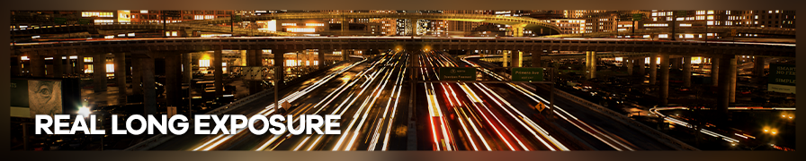
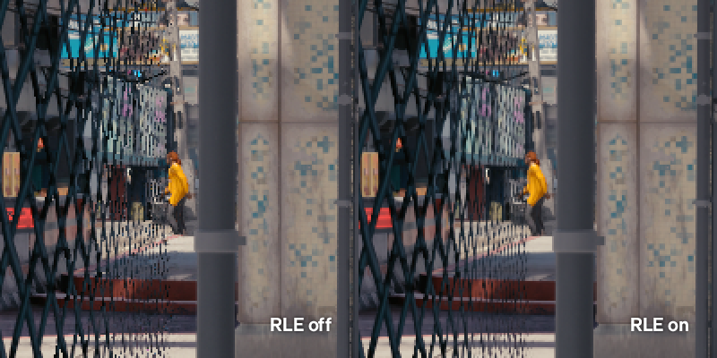
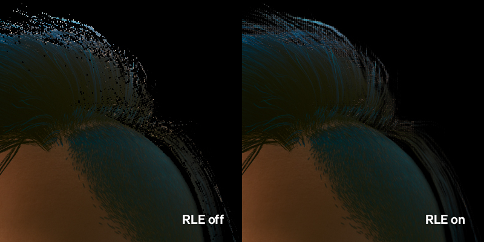
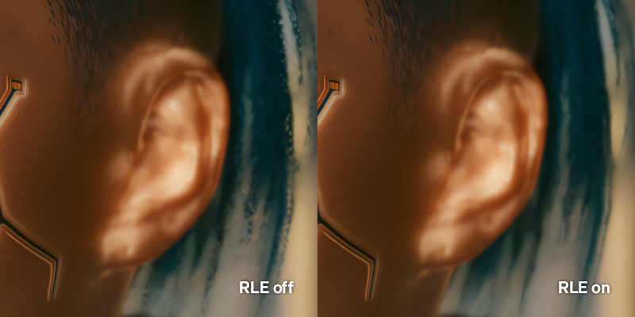
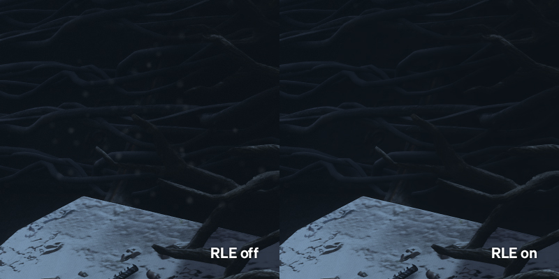

由 barkar_b 拍摄
使用 RealLongExposure.fx 隐藏游戏中的时序问题
RealLongExposure.fx（RLE）由 LordKobra 创作，是一款 ReShade 着色器，通过混合多帧画面来实现长曝光效果。此外，它也可用于消除由 TAA（时域抗锯齿）等时序"抖动"效果以及一些现代毛发着色器所产生的瑕疵，还可以用来遮盖其他令人分心的元素，例如粒子特效（参见示例 #3）。
本指南的目标是捕获一帧静止画面，因此你需要固定镜头角度，并且游戏通常需要处于时停状态。
推荐着色器设置
Exposure Time: 3-5+ Seconds¹ ShowGreenOnFinish: Off ISO: Default Gamma: Default Delay: Default
¹ - 曝光时间可以设置为任意不过短的时长，因为拍摄只需在问题被混合消除后进行即可。
强烈建议将 StartExposure 绑定到快捷键，以便在热采样时更方便地激活。
使用示例
场景 1：TAA 次像素

RLE 可以帮助平均化现代游戏中时域抗锯齿抖动所造成的"次像素爬行"，从而获得更加清晰的图像。
场景 2：时域毛发渲染

部分现代游戏（如《赛博朋克 2077》、《漫威银河护卫队》、《最终幻想 VII：重制版》）采用了时域毛发渲染技术——毛发在运动时效果出众，但在画面静止时会出现明显瑕疵。RLE 可以将这些瑕疵平均化，从而呈现更为干净的毛发效果。
在使用 ReShade 深度缓冲效果（如景深）进行拍摄时，推荐搭配 RLE 使用，因为 TAA 导致的深度缓冲抖动会在深度效果中产生块状瑕疵。

场景 3：粒子特效

RLE 可以平均化时停状态下仍在运动的细微粒子特效（如尘埃）。请观看下方视频，以获取更直观的效果演示。
视频示例